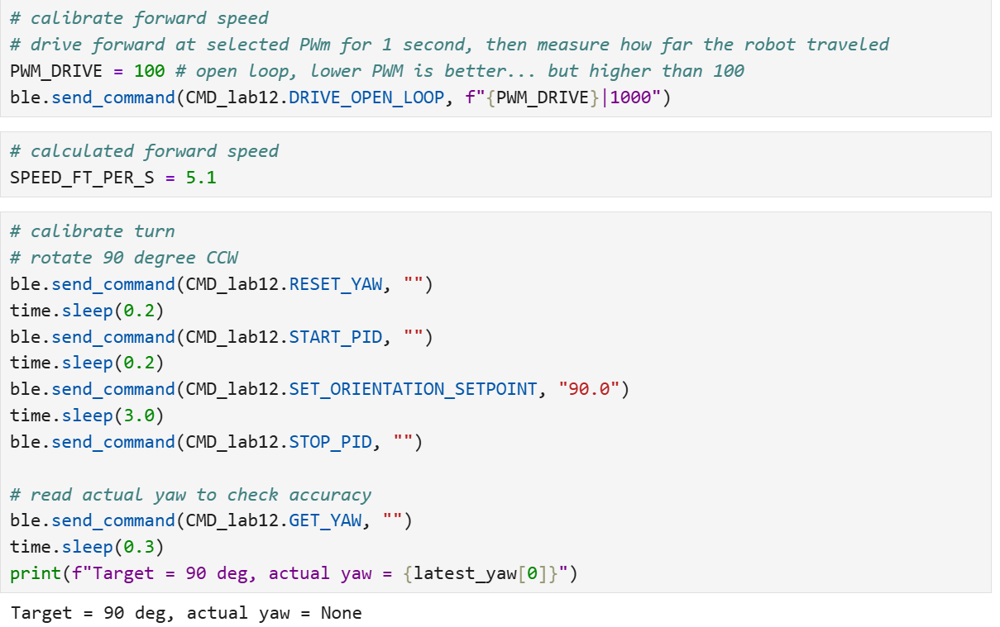
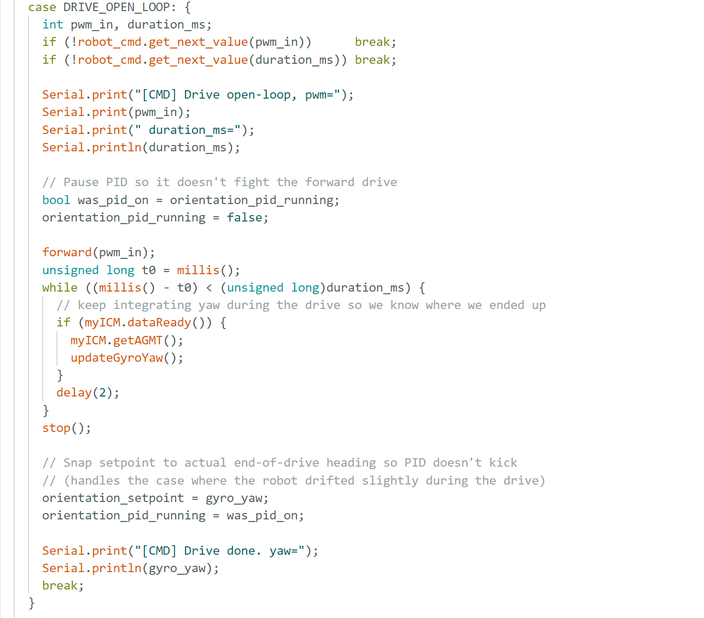
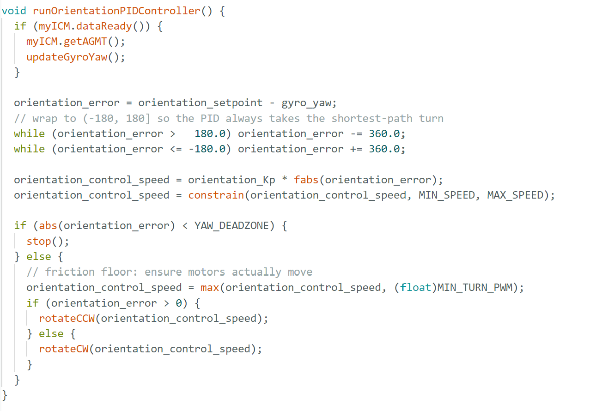
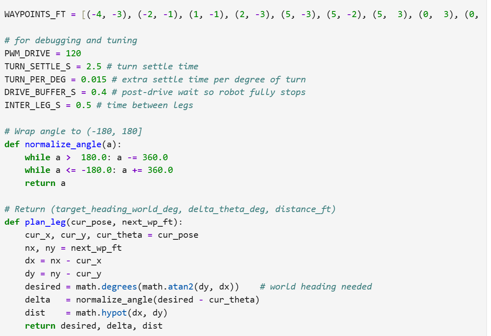
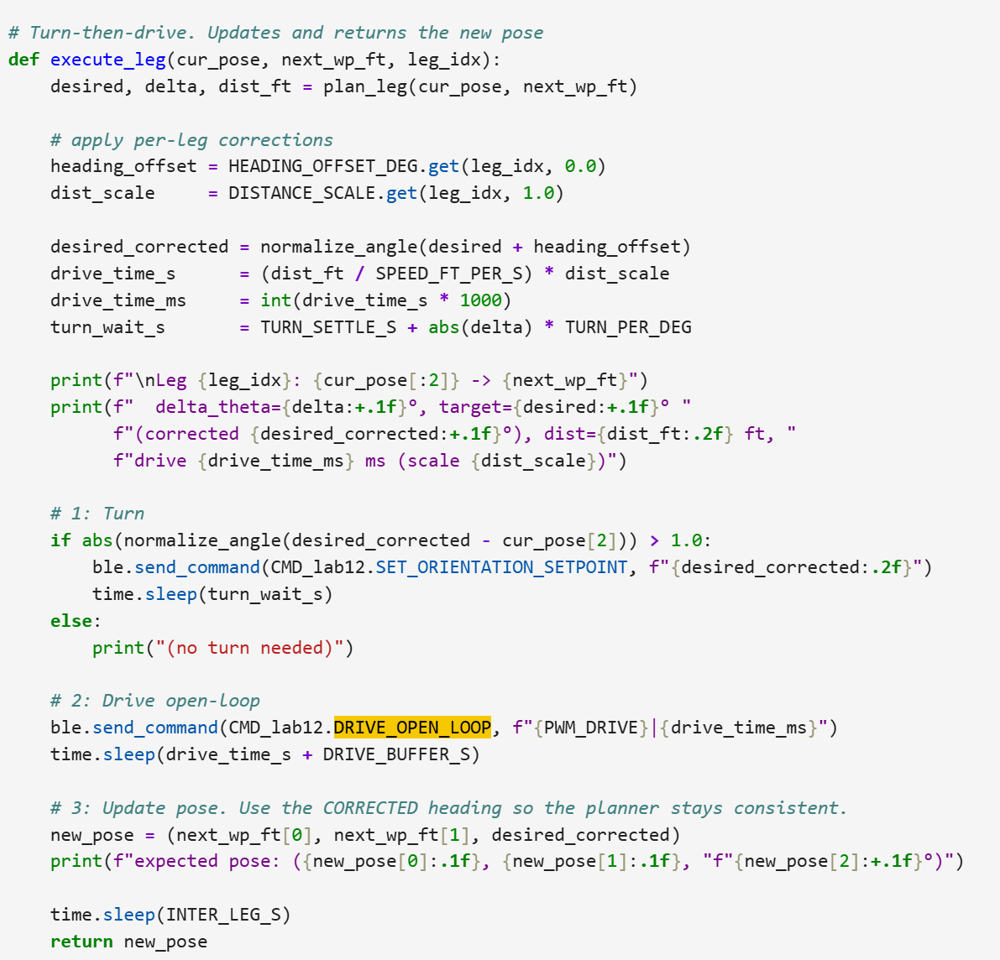
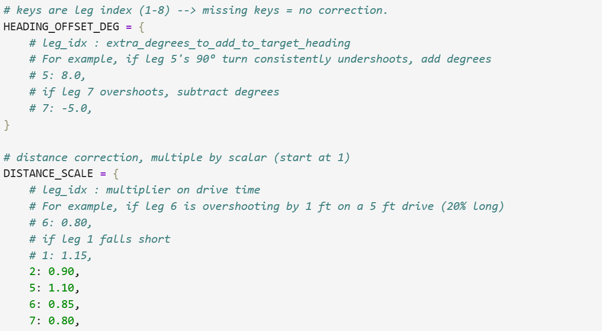

Lab 12：Path Planning & Execution
Objective
The objective of this lab is to plan the path in the lab map and scale and adjust the path according to the performance. I collabroated with Michelle Yang for this lab. We referred to Jeffery Cai's analysis for different methods for Lab 12, which especially analyzed pros and cons of open loop timing and using TOF readings directly. According to Michelle's friend Donghao Hong, it is not surprising that it would take time to adjust the position if TOF is integrated. As time is tight near the final, we decided to move on with open loop for straight running and PID control by IMU for steering, to save time which get sacrificed for adjusting distances and also consuming battery. In many tests for lab 11, it showed the battery consumption can be a problem to delay the progress of lab.
Code Snippet: Calibration

To test efficiently, two calibrations were conducted. One is to quantify the distance that Robot displaces within one second in PWM of 100. Based on our final running test, the distance is 5 feet 1 inch. With this calibration, we can calculate the time set for each step for later navigation, which is quite convenient. Another one is for turning to check how much the actual turning deviates from the target angle.
Code Snippet: Local Path Planning

In the case drive_open_loop, command includes information in PWM value and duration time instead of direct distance. Besides, to avoid interference from PID control for turning and conduct open loop control, PID was temporarily turned off. Because we are doing a open loop, robot does not check if it has been the location that it should be. Instead, it just assume it is at the right location and continue to next step. While robot is running, it is not completely "blind." It keeps collecting yaw as it provides accurate orientation information at the beginning of each turn session (also the end of a straight-line-running session) and take the current yaw as the new orientation starting point to avoid inaccurate correction.
Code Snippet: Feedback Control

To adjust angles smoothly at specific positions, we used proportional control to make the turn. To improve the efficiency, of the path, angle error was wrapped to present a short-path turn.
Code Snippet: Waypoint Planner


This is Arduino code for execution. Plan_leg is a funny function Michelle
named for calculating the movement to next waypoint. Instead of manually calculating, the direction &
distances are both calculated by code: based on current and target location pins, desired
is the orientation that robot should face in, while delta is angle that robot needs to turn
. Besides, distis the distance Robot open-loop runs at.
Then we do the conversion from distance to estimated time. Then execute the steps while using
waitpauses the python side running. In constrast, delaywould freeze the
arduino instead.
Because this is open loop in displacement, there are tunings needed for specific steps. Through multiple runs, we came to conclusions about which steps needs to tune down or up.

Path Execution Performance
Watch the video of Robot successfully executing the open-loop navigation.We took many trials to make this close-to-perfect run happening. Precisely, the robot has an acccuracy rate of hitting 6 waypoints out of 9 and 3 deviated locations are all not that far from the target waypoints (within 2 inches). I think the cons of open loop distance control is error happening randomly can interrupt the performance easily. Also, robot would not be able to pivot from the random disruption in terms of being interferenced in distances. Sometimes overshout was just gonna bring the robot crash to the mall because of no feedback in distance operation. The capacity of our solution is limited: if this map leaves narrower channel for robot to go through rather than current relatively open space, the interaction with wall would severely affect its performance. However, there are benefits behind our choices too: troubleshooting is very intuitive; each run takes less time as there is not much feedback communcation in straight line running.
Reference
I cooperated closely with Michelle Yang for this lab. We referred to Jeffery Cai's website for picking the strategies. Besides, appreciate Donghao Hong's experience sharing with his lab.